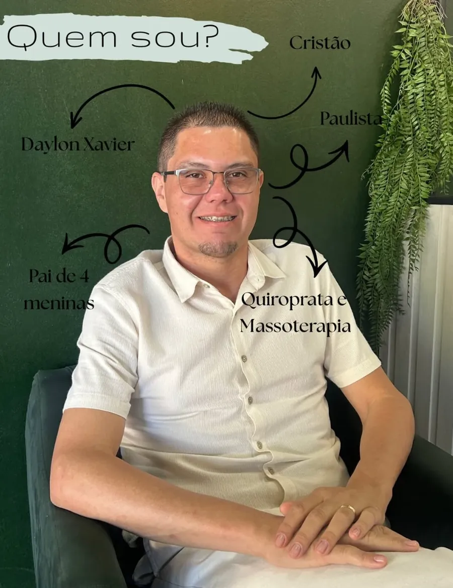
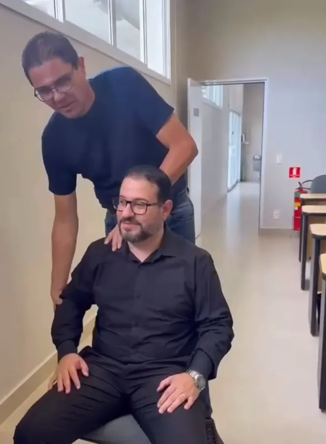
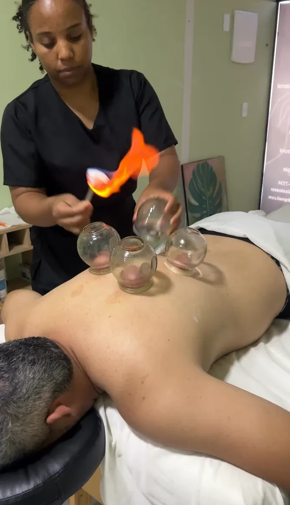

Corpo
Técnicas manuais para aliviar dores, liberar tensões e devolver movimento.
Artur Nogueira · SP
Quiropraxia e terapias integrativas para aliviar suas dores e cuidar de você por inteiro: corpo e mente, com atendimento personalizado e todo cuidado e atenção.

“Seu corpo é
o seu templo.”
O espaço
O Espaço Inovar foi pensado para trazer uma lembrança importante: você também precisa se cuidar. Aqui você reserva um momento para desacelerar, respirar e cuidar do seu bem-estar.
Nossos procedimentos são realizados com todo cuidado e atenção, buscando bem-estar e resultados que fazem diferença. E o cuidado vai além do corpo: também acolhemos e cuidamos da mente. Porque sua saúde merece atenção por inteiro.
Técnicas manuais para aliviar dores, liberar tensões e devolver movimento.
Terapias que acalmam o sistema nervoso e ajudam no sono e na ansiedade.
Um momento único, especial e todinho seu, com atendimento personalizado.
Terapias
Conheça os atendimentos do Espaço Terapêutico Inovar.
Tratamento manual da coluna e das articulações para reduzir dores e recuperar a mobilidade. Não é mágica, é quiropraxia.
Terapia corporal de origem oriental que trabalha o alinhamento e o equilíbrio do corpo por meio de técnicas manuais.
Para aquele peso nas costas que não passa nunca.
Um toque super sutil na cabeça, nuca e coluna. Não é força, é reconexão.
Tratamento complementar para a disfunção temporomandibular (DTM).
Para quem trabalha o dia todo com as mãos: digitar, celular, tesoura, panela…
Para quem é
Se você se identifica com alguma dessas queixas, agende uma avaliação. Seu corpo sabe se curar, ele só precisa ser ouvido.
Falar com o Espaço InovarComo funciona
Chame no WhatsApp e escolha o melhor horário para você.
Conversamos sobre suas queixas e entendemos o que seu corpo precisa.
Técnicas escolhidas para você, com atendimento personalizado.
Equipe

Quiropraxista e massoterapeuta
Começou a jornada no cuidado com a saúde atendendo os primeiros clientes por indicação. Desde então se dedica a aprimorar suas habilidades e oferecer um serviço de qualidade e excelência.
“Se você busca um profissional dedicado, apaixonado pelo que faz e comprometido em tirar as suas dores, será um prazer te atender!”

Terapeuta
Faz parte da equipe do Espaço Terapêutico Inovar e atua nos protocolos de tratamento junto com o Daylon.
Resultados
José Cícero, pouco mais de 60 anos, chegou com várias queixas. Uma delas era não conseguir se abaixar. Esse resultado é o que nos comove.
Galeria




Contato
Para mais informações, dúvidas e agendamento, fale com a gente. Você merece!